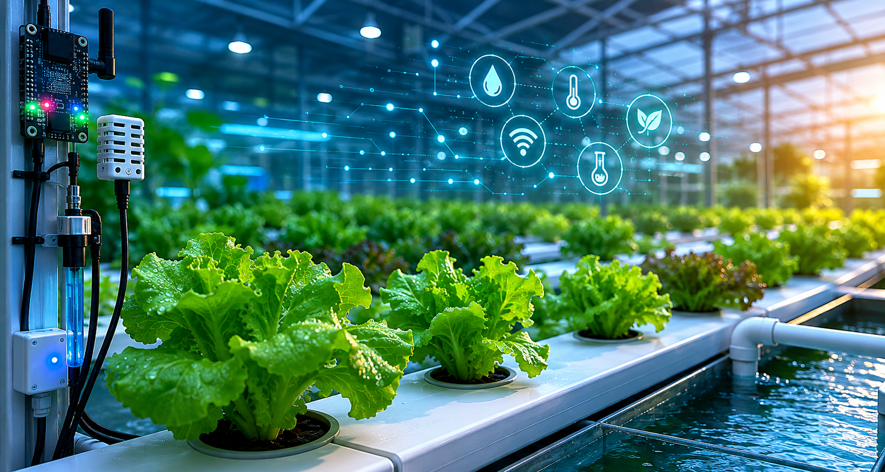

Reducción estimada del consumo de agua.
Monitoreo inteligente en tiempo real.
Control automatizado y procesamiento digital.

Escalones de Vida integra sensores inteligentes, automatización y monitoreo en tiempo real para optimizar el crecimiento vegetal mediante hidroponía automatizada. El sistema busca mejorar la eficiencia hídrica, reducir desperdicios y fomentar innovación sostenible en espacios urbanos.
Sistema hidropónico optimizado mediante monitoreo digital.
Medición de pH, TDS, temperatura y nivel de agua.
Recirculación de solución nutritiva para ahorro hídrico.
Control automatizado mediante ESP32 y monitoreo remoto.
Programación, integración de sensores y automatización del sistema hidropónico.
Diseño experimental, documentación técnica y validación del proyecto.